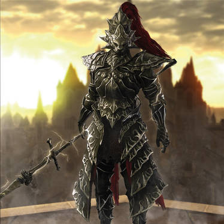
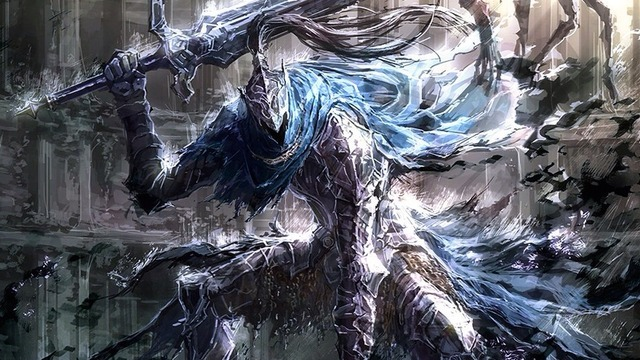
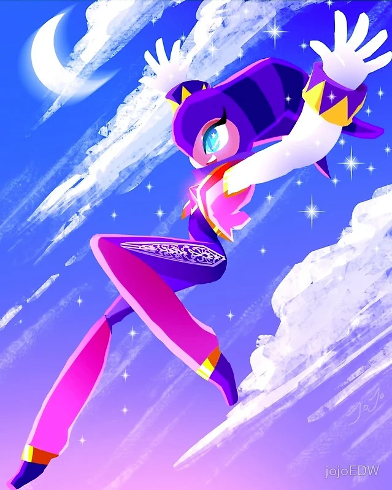

Favorite Characters

Dragonslayer Ornstien is a boss in the orignal darksouls game, he is along with another enemy called smough fight you in a 2v1. Defeating one of them first will buff the other one with their powers in the second phase. Ornstein weilds a spear and is very fast for how the game was first created (it feels slower and clunkier now compared to their newer games) but regardless one of my favorite designs and weapons to use.

Abyssalknight Artorias is another boss within the darksouls game that has many lore connections. He is a boss you fight in the dlc where you find him consumed by darkness and driven mad, with a broken arm and a left handed sword that he wields it like the legend he is. He is another great design that is a favorite of a family members.

Nights is a SEGA character that doesn't really have much of following or games to them, they make apperences in multiple sega games but not known much. I personally like the colors and am a huge fan of the jester style characters.